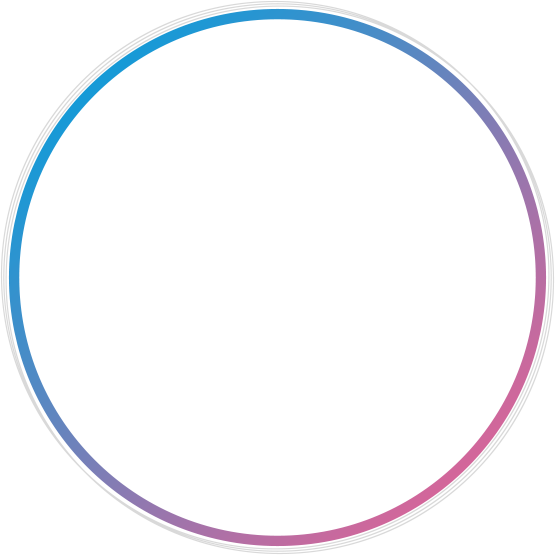

私と地球への健康活動
ケンカツサポートメディア
Vision
今より健康と環境にいいコトを一緒に
Better Life for Positive Health Care and Environment
健康と環境を守ることで未来を創造していく。
ココトトは、持続可能な社会を実現するために
健康や環境に優しいコトを発信し今よりBetterな行動を選択する
ケンカツ仲間を増やしていくメディアです。
健康であっても環境が悪化すれば暮らしやすい場所が減っていきます。
環境が良くても健康でなければ楽しく生活することができません。
多くの人のケンカツが、
健康で暮らしやすい地球の未来につながるきっかけにしたい。
⾃分にできることから少しずつはじめるケンカツが
きっとその先「やってよかった」になるように。
ひとりひとりができる私と地球への健康活動を少しずつからはじめよう。
ケンカツサポートメディア
Mission
ケンカツサポートメディア


自分や大切な人の
健康のために
For
Health
自分や大切な人の
健康のために
For
Environment
ケンカツとは
健康や環境にいいコトを
生活習慣の中に取り入れ
活動するコト
私たちは、ケンカツ仲間と一緒に
今よりBetterな活動をする仲間を増やし
人々の健康のため
今と未来の環境のため
この活動を紡いでいきます。


健康や環境に関心のある私からケンカツしている私へ